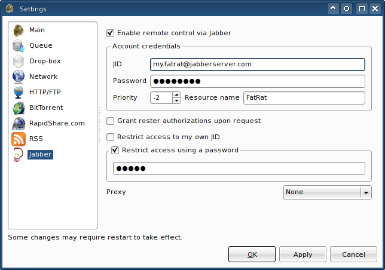

|
Jabber settings |
In this window you can find all settings related to the Jabber remote control. Server hostname and port are automatically retrieved from DNS SRV records - therefore, no extra fields for this information are present.

If you set the priority to a negative value, no messages should reach FatRat if somebody just doubleclicks our contact in his contact list. With a negative priority only messages directly sent to our resource name are delivered instead of getting stored at the Jabber server. You should set a negative priority if you're sharing your personal Jabber account with FatRat. However, in case you've created a special Jabber account for FatRat, it is handy to use a positive priority. All Jabber error or information messages are written into the global log. Refer to the log in case of any trouble.
Grant roster authorizations upon request will cause FatRat to respond to any roster requests positively. If disabled, FatRat will ignore any such requests.
Restrict access to my own JID should be used only if you haven't allocated a special account for FatRat. In this mode, FatRat will accept only messages coming from the same JID specified in the settings.
Restrict access using a password - FatRat won't let anybody to take control over the application unless the correct password is specified beforehand. After a certain period of inactivity, the remote user will have to re-authenticate.
Copyright © 2006-2008 Luboš Doležel